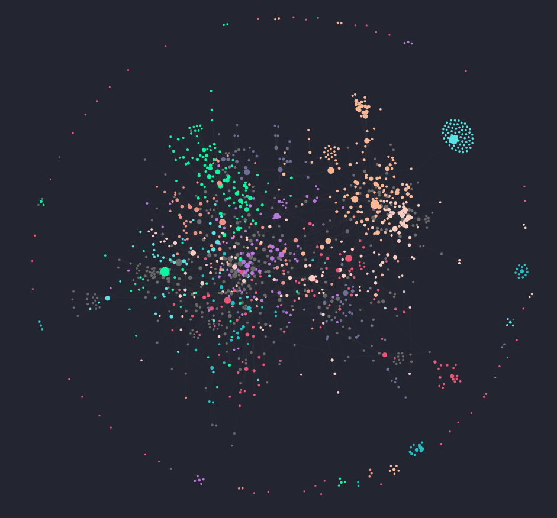

My current org-mode setup
28 November 2022
Contents
I’ve put some work into my org-mode setup in Emacs over the last while, and I’ve recently gotten pretty content with a setup with the following affordances:
- Low-friction, non-hierarchical note-taking with
org-roam - Plain-text annotation, interlinked with my other notes, of Zotero-managed reference material
- An
org-agendathat pulls events and TODOs from a wide variety of sources, including my notes - A flexible inbox that captures anything I can’t deal with immediately, especially emails and web pages
- Reminders for scheduled events and task deadlines
It looks like this:


Yes, I do actually use the graph. It’s hard to get it into a web page, but you can browse the underlying notes here.
I was thinking it would be nice to document it in case it’s useful to anyone attempting something similar, so here we go. All the configuration I reference here can be found in my dotfiles repo.
org folder
I have a folder, ~/org, that holds most everything I need for my setup. It has this structure:
~/org
├ gtd
│ ├ inbox.org
│ ├ next.org
│ ├ someday.org
│ ├ consume.org
│ └ calendars
│ ├ personal.org
│ ├ stanford-law.org
│ └ more calendars...
├ library
└ zettelkasten~/org/gtd holds my main agenda files, ~/org/library holds my reference material, and ~/org/zettelkasten holds an org-roam Zettelkasten-ish.
org-agenda
The thing I use org-mode for most, on a median day, is my agenda. It mostly lives in ~/org/gtd, which is so named because of my aspiration to something like a GTD methodology similar to Jethro Kuan’s. My agenda is built from inbox.org, next.org, someday.org, consume.org, any files in ~/org/zettelkasten containing TODO items, and calendars. The code for the non-calendar part looks like this (the calendar bit is below):
(setq who/org-agenda-directory "~/org/gtd/")
(require 'find-lisp)
(defun who/find-org-files (directory)
(find-lisp-find-files directory "\.org$"))
(defun who-org/agenda-files-update (&rest _)
(let ((todo-zettels (->> "rg --files-with-matches '(TODO)|(NEXT)|(HOLD)|(WAITING)' ~/org/zettelkasten"
(shell-command-to-string)
(s-lines)
(-filter (lambda (line) (not (s-blank? line)))))))
(setq org-agenda-files (append (who/find-org-files who/org-agenda-directory)
todo-zettels))))
(advice-add 'org-agenda :before #'who-org/agenda-files-update)I was somewhat worried that looking through my entire Zettelkasten for TODOs would be slow, but ripgrep is very, very fast (this operation takes about 10 milliseconds).
Each of the files in ~/org/gtd has a different purpose, mostly emerging from GTD ideas:
inbox.orgis mostly a destination for capture templates, but sometimes I write things into it manually on my phone using Markor (syncing via Syncthing). I jot stuff in here so I can stop thinking about it in the moment and come back to it later.next.orgis for stuff that I’m currently working on or ought to start working on soon.someday.orgis for stuff that I’ll get to whenever I get to it, possibly never.consume.orgis for media that I intend to consume at some point: books, movies, music, etc.
I capture stuff into inbox.org and eventually refile it into the most appropriate out of the other three, or sometimes into one of my Zettels, using Jethro Kuan’s method. I try to do this pretty often and maintain inbox zero when possible. My capture templates look like this:
(setq org-capture-templates
`(("i" "inbox" entry (file ,(concat who/org-agenda-directory "inbox.org"))
"* TODO %?\n")
("a" "appointment" entry (file "~/org/gtd/calendars/personal.org" ))
("e" "email" entry (file+headline ,(concat who/org-agenda-directory "inbox.org") "Emails")
"* TODO [#B] %a" :immediate-finish t)
("l" "link" entry (file ,(concat who/org-agenda-directory "inbox.org"))
"* TODO %(org-cliplink-capture)" :immediate-finish t)
("c" "org-protocol-capture" entry (file ,(concat who/org-agenda-directory "inbox.org"))
"* TODO [[%:link][%:description]]\n\n %i" :immediate-finish t)))The two of these I use most are “org-protocol-capture”, for collecting links to websites I have open in my browser, and also “email”. I use notmuch for email, and I have a keybinding that lets me trigger the “email” template while looking at an email there by pressing c. If an email is going to take a while to answer, I capture it to get it out of my relatively unmanageable email inbox and into Org. “org-protocol-capture” works in conjunction with alphapapa’s nice bookmarklet. I use it when I’m feeling overwhelmed by tabs in Firefox and I want to close some of them while remembering they exist.
I also have some habits I track with org-habit. As the screenshot shows I was a bit overambitious in terms of how many habits I thought I could keep up.
Lastly, I added a custom alert style for org-wild-notifier agenda alerts to make them stay visible until I explicitly dismiss them (I’m often not looking at my screen).
(alert-define-style 'who/alert-style-reminder
:title "Agenda reminders"
:notifier (lambda (info)
(alert-libnotify-notify (plist-put info :persistent t))))
(add-to-list 'alert-user-configuration
'(((:title . "Agenda"))
who/alert-style-reminder))n.b. This relies on org-wild-notifier-notification-title having its default value, “Agenda”.
Aside: Calendars and Google sync
The files under ~/org/gtd/calendars reflect various Google calendars that I sync with. I use org-gcal for that as follows:
(defun who/get-file-contents (filename)
"Return the contents of FILENAME."
(with-temp-buffer
(insert-file-contents filename)
(buffer-string)))
(use-package org-gcal
:after org
:commands (org-gcal-request-token)
:config
(setq org-gcal-token-file "~/.config/org-gcal/.org-gcal-token"
org-gcal-client-id (who/get-file-contents "~/.config/org-gcal/.org-gcal-client-id")
org-gcal-client-secret (who/get-file-contents "~/.config/org-gcal/.org-gcal-client-secret")
org-gcal-fetch-file-alist '(("email_obfuscated@gmail.com" . "~/org/gtd/calendars/personal.org")
("email_obfuscated@law.stanford.edu" . "~/org/gtd/calendars/stanford-law.org"))
org-gcal-local-timezone "Canada/Pacific"))Getting Google sync stuff working in general has been a nightmare, especially wrt Gmail. Eventually I got that working using oauth2l plus a locally-built copy of isync, which I still have to rebuild manually when there’s an update for it to get it to notice the XOAUTH2 SASL plugin. I handle most of that stuff with Nix via home-manager (see my home.nix). It isn’t strictly Org-related, but getting email working was key to the GTD inbox concept working at all.
Library
~/org/library holds reference material in a single, flat
folder. I don’t really have much use for a folder hierarchy here,
because I don’t really ever go looking for stuff directly in the
library. I might look through my Zettelkasten for things and find links
from there, or I might look in Zotero, or I might use Recoll for a text
search, but at the level of what files are where on the disk, I don’t
really care.
When I capture something with Zotero (usually via the Zotero browser extension), it goes in this folder and Zotero makes an entry linking to it. I use the ZotFile plugin to accomplish this. I also have a lot of stuff that I just download from somewhere and dump in here. Usually I link to it somehow, from a Zettel or something, so it’s not just adding to the trash heap (I hope).
org-roam
I use org-roam
for a knowledge base that’s almost a Zettelkasten, but I’m
not super strict on the principles. In particular I have a number of
not-at-all-atomic notes that are really just kind of scratchpads, e.g. a
note titled “Stanford” that’s just so I have something to open when I
need to write down work-related stuff. The graph is org-roam-ui,
and I also use notdeft for
full-text search. I install that by adding it to
dotspacemacs-configuration-layers:
(notdeft :variables
notdeft-directories '("~/org/zettelkasten")
;; Ignore property drawers at the start of files (as created by org-roam)
notdeft-allow-org-property-drawers t)Other than that, I haven’t made a ton of customizations to org-roam because it honestly just works pretty well.
The main thing I did some customization around was writing notes on
materials from my reference library. My approach is very similar to the
one described by Rohit Goswami,
but a few things have changed in the 2.5 years since that post.
Basically, what I want is to have Zotero handle the metadata for the
materials in my library, and use that metadata from Emacs when I’m
writing notes on those materials in the form of org-roam
Zettels. I use org-noter
to take notes on PDFs.
So, a little basic configuration to start out. Zotero automatically
produces a BibTeX file of the contents of its library every time I
change it, thanks to the Better BibTeX
plugin. That file is ~/org/master.bib, and
bibtex-completion needs to know about it, as well as some
other boring stuff:
(setq bibtex-completion-bibliography '("~/org/master.bib"))
(setq bibtex-completion-pdf-field "file")
(setq bibtex-completion-notes-path org-roam-directory)
(setq orb-roam-ref-format 'org-cite)Now helm-bibtex knows where to look for my bibliography.
When I select an entry via helm-bibtex that doesn’t have an
associated notes file, it will offer to create one for me, which is
exactly what I want, but I need to define a template for it to use for
the note:
(setq org-roam-capture-templates
'(("d" "default" plain "#+title: ${title}\n\n%?"
:target (file "%<%Y%m%d%H%M%S>-${slug}.org")
:unnarrowed t)
("n" "bibliography notes" plain "%?"
:target (file+head "${citekey}.org" "#+title: ${title}\n#+filetags: :bib:\n\n* Notes\n:PROPERTIES:\n:NOTER_DOCUMENT: ${file}\n:END:\n")
:unnarrowed t)))I think there’s probably a way to get helm-bibtex to
select that template automatically, but whatever.
Sometimes I download stuff outside of Zotero, and still want a convenient way to make a notes file for it. To do that, I just pick the most recently modified file in the library, and forget about all the BibTeX stuff:
(defun who/mtime (file) (let ((attrs (file-attributes file))) (nth 5 attrs)))
(defun who/latest-file (path)
(let ((e (f-entries path)))
(car (sort e (lambda (a b)
(not (time-less-p (who/mtime a)
(who/mtime b))))))))
(defun who/org-noter-latest ()
(interactive)
(save-excursion
(search-backward "#+title")
(move-end-of-line nil)
(insert "\n#+roam_tags: bib"))
(insert "* Notes\n")
(let* ((file (who/latest-file "~/org/library"))
(relative-file (file-relative-name file "~/org/zettelkasten")))
(org-set-property "NOTER_DOCUMENT" relative-file)
(org-noter)))This gives me a pretty smooth two-step of “click Save to Zotero in browser (or download something manually) → create note in Emacs”.
Conclusion
Getting this stuff working has been both very difficult and very valuable for me, and I hope my meagre notes are of use to someone trying to run something similar. If you’re having trouble getting some of this code working, feel free to send me an email. If this workflow seems useful to you, you may want to look at some of the work that inspired it (including a lot of directly stolen code):
- Jethro
Kuan’s GTD workflow (and, of course,
org-roam) - Rohit Goswami’s note workflow
- karlicoss’s guide to annotation